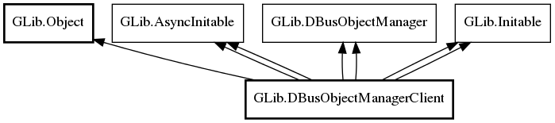

DBusObjectManagerClient
Object Hierarchy:

Description:
Namespace: GLib
Package: gio-2.0
Content:
Properties:
Static methods:
- public static async DBusObjectManagerClient new (DBusConnection connection, DBusObjectManagerClientFlags flags, string name, string object_path, owned DBusProxyTypeFunc get_proxy_type_func, Cancellable? cancellable = null)
- public static async DBusObjectManagerClient new_for_bus (BusType bus_type, DBusObjectManagerClientFlags flags, string name, string object_path, owned DBusProxyTypeFunc get_proxy_type_func, Cancellable? cancellable = null)
Creation methods:
- protected DBusObjectManagerClient ()
- public DBusObjectManagerClient.for_bus_sync (BusType bus_type, DBusObjectManagerClientFlags flags, string name, string object_path, owned DBusProxyTypeFunc? get_proxy_type_func, Cancellable? cancellable = null) throws Error
- public DBusObjectManagerClient.sync (DBusConnection connection, DBusObjectManagerClientFlags flags, string name, string object_path, owned DBusProxyTypeFunc? get_proxy_type_func, Cancellable? cancellable = null) throws Error
Methods:
Signals: